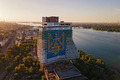

Multimedia
Dnipro é uma cidade incrível localizada nas margens do rio Dniepre, na Ucrânia. É conhecida pela sua bela arquitetura, parques majestosos e um forte espírito indomável!
Fotografias


Vídeo
Poesia
Brama e geme o largo Dniepre,
Uiva o vento furioso e sem fim,
Dobra ao chão salgueiros altos,
Ergue em serras a vaga que ruge assim.
A lua pálida entre nuvens densas
Ora assoma, ora volta a esconder,
Qual pequeno barco em mar revolto
Que entre as ondas parece desfalecer.